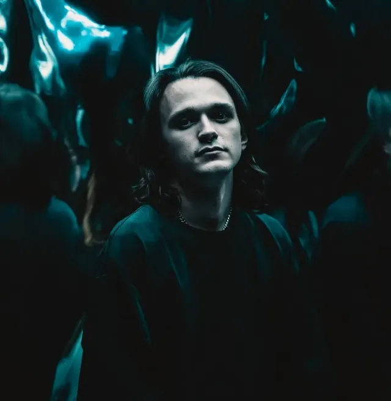
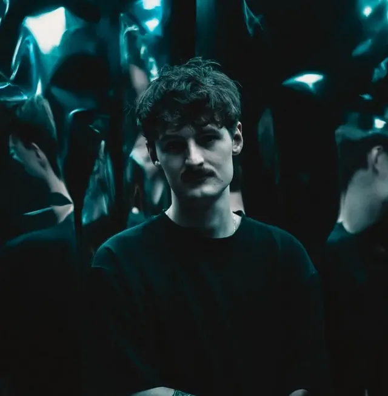
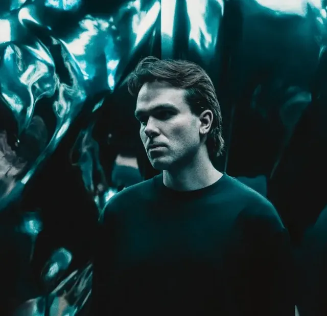
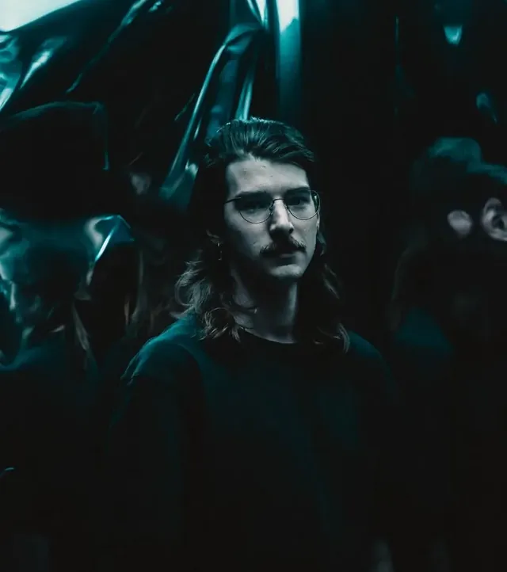
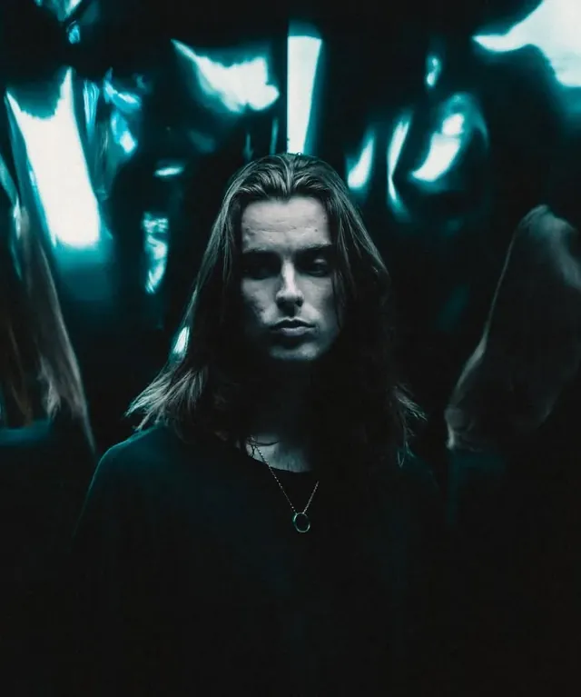

The lineup
Members
Five schoolfriends from Sydney's northern beaches who started a band in 2017 and never stopped.
Member profiles

Jono Hawkey
Vocals
Jono is Bloom's singer and a founding member. He has fronted the band since it started in 2017, when a group of schoolfriends from Belrose decided to make loud music together.
He writes most of the lyrics. The songs often deal with grief, nostalgia and disappointment, and his voice can go from a scream to a whisper in the same song.
Selected tracks: Withered, In Passing.

Jarod McLaren
Guitar
Jarod is a founding guitarist and one of the band's main songwriters. He also sings clean parts, trading lines with Jono on songs like Bound To Your Whispers.
His playing has a lot to do with the way Bloom moved from heavy post-hardcore towards the bigger, more melodic sound of the newer records.
Selected tracks: In Passing, Past Tense.

Oliver Butler
Guitar
Oliver has played guitar in Bloom since the band's first practices in Sydney. He built the two-guitar sound with Jarod that has been on every release.
Jarod usually writes the melodic parts, and Oliver's guitar adds the weight under them. Together they let the band go from hardcore to wide open choruses.
Selected tracks: Keep You, Glen Street.

Andrew Martin
Bass
Andrew is the bass player and a founding member. He has been with the band since 2017 and also gets songwriting credits across the records.
His bass holds down the heavy parts of the songs. It gives the low riffs on Maybe In Another Life their punch while keeping the quiet sections steady.

Jack Van Vliet
Drums
Jack is the drummer and a founding member. He has played on every Bloom release since 2017.
He has toured with the band around Australia, Europe and Japan. His drumming is the steady part that the rest of the band builds around.
Selected tracks: Forget Me Not, Only Sky.
At a glance
- Formed
- 2017, Belrose NSW
- Members
- Five
- Latest release
- The Light We Chase (2025)
- Label
- Pure Noise Records